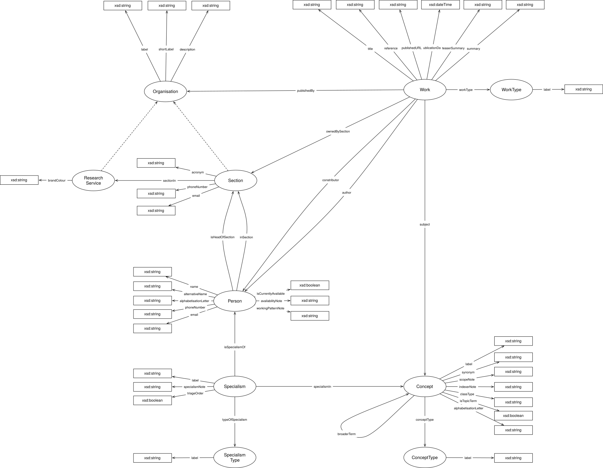

IRI: http://parliament.uk/ontologies/library-knowledge-base/Concept
IRI: http://parliament.uk/ontologies/library-knowledge-base/ConceptType
IRI: http://parliament.uk/ontologies/library-knowledge-base/Organisation
IRI: http://parliament.uk/ontologies/library-knowledge-base/Person
IRI: http://parliament.uk/ontologies/library-knowledge-base/ResearchService
IRI: http://parliament.uk/ontologies/library-knowledge-base/Section
IRI: http://parliament.uk/ontologies/library-knowledge-base/Specialism
IRI: http://parliament.uk/ontologies/library-knowledge-base/SpecialismType
IRI: http://parliament.uk/ontologies/library-knowledge-base/Work
IRI: http://parliament.uk/ontologies/library-knowledge-base/author
IRI: http://parliament.uk/ontologies/library-knowledge-base/broaderTerm
IRI: http://parliament.uk/ontologies/library-knowledge-base/conceptType
IRI: http://parliament.uk/ontologies/library-knowledge-base/contributor
IRI: http://parliament.uk/ontologies/library-knowledge-base/inSection
IRI: http://parliament.uk/ontologies/library-knowledge-base/isHeadOfSection
IRI: http://parliament.uk/ontologies/library-knowledge-base/isSpecialismOf
IRI: http://parliament.uk/ontologies/library-knowledge-base/ownedBySection
IRI: http://parliament.uk/ontologies/library-knowledge-base/publishedBy
IRI: http://parliament.uk/ontologies/library-knowledge-base/sectionIn
IRI: http://parliament.uk/ontologies/library-knowledge-base/specialismIn
IRI: http://parliament.uk/ontologies/library-knowledge-base/subject
IRI: http://parliament.uk/ontologies/library-knowledge-base/typeOfSpecialism
IRI: http://parliament.uk/ontologies/library-knowledge-base/workType
IRI: http://parliament.uk/ontologies/library-knowledge-base/acronym
IRI: http://parliament.uk/ontologies/library-knowledge-base/alphabetisationLetter
IRI: http://parliament.uk/ontologies/library-knowledge-base/alternativeName
IRI: http://parliament.uk/ontologies/library-knowledge-base/availabilityNote
IRI: http://parliament.uk/ontologies/library-knowledge-base/brandColour
IRI: http://parliament.uk/ontologies/library-knowledge-base/classType
IRI: http://parliament.uk/ontologies/library-knowledge-base/description
IRI: http://parliament.uk/ontologies/library-knowledge-base/email
IRI: http://parliament.uk/ontologies/library-knowledge-base/indexerNote
IRI: http://parliament.uk/ontologies/library-knowledge-base/isCurrentlyAvailable
IRI: http://parliament.uk/ontologies/library-knowledge-base/isTopicTerm
IRI: http://parliament.uk/ontologies/library-knowledge-base/label
IRI: http://parliament.uk/ontologies/library-knowledge-base/name
IRI: http://parliament.uk/ontologies/library-knowledge-base/phoneNumber
IRI: http://parliament.uk/ontologies/library-knowledge-base/publicationDate
IRI: http://parliament.uk/ontologies/library-knowledge-base/publishedURL
IRI: http://parliament.uk/ontologies/library-knowledge-base/reference
IRI: http://parliament.uk/ontologies/library-knowledge-base/scopeNote
IRI: http://parliament.uk/ontologies/library-knowledge-base/shortLabel
IRI: http://parliament.uk/ontologies/library-knowledge-base/specialismNote
IRI: http://parliament.uk/ontologies/library-knowledge-base/summary
IRI: http://parliament.uk/ontologies/library-knowledge-base/synonym
IRI: http://parliament.uk/ontologies/library-knowledge-base/teaserSummary
IRI: http://parliament.uk/ontologies/library-knowledge-base/title
IRI: http://parliament.uk/ontologies/library-knowledge-base/triageOrder
IRI: http://parliament.uk/ontologies/library-knowledge-base/workingPatternNote
This HTML document was obtained by processing the OWL ontology source code through LODE, Live OWL Documentation Environment, developed by Silvio Peroni.